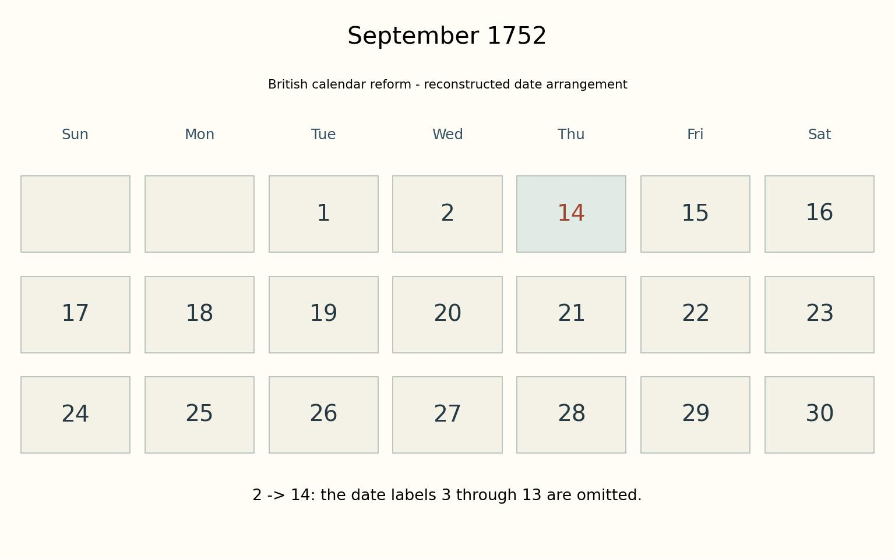
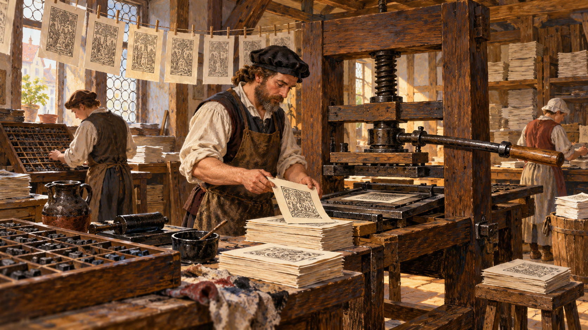

History / Europe
9월 2일 다음 날이 14일이었던 달력
1752년 9월 달력의 날짜가 건너뛰는 이유를 읽습니다.
이야기 읽기History · 역사
오래된 기록 속, 뜻밖의 한 장면을 만납니다.
6개의 이야기

History / Europe
1752년 9월 달력의 날짜가 건너뛰는 이유를 읽습니다.
이야기 읽기
History / Europe
1517년의 논제와 인쇄물의 확산을 따라 종교개혁의 사상·권위·정치가 만나는 과정을 읽습니다.
이야기 읽기History / Europe
존 왕과 신하들의 갈등에서 출발해 마그나 카르타의 자유인 조항과 그 한계를 읽습니다.
이야기 읽기History / Europe
과학자의 이름 옆에 조폐국이라는 직장이 붙습니다. 뉴턴은 그곳에서 무슨 일을 했을까요?
이야기 읽기History / Europe
Notes on Nursing에서 병실의 환경과 환자의 작은 변화를 살피는 태도를 역사적 맥락으로 읽습니다.
이야기 읽기History / Europe
사무엘 페피스의 대화재 일기를 따라 화재의 관찰·피난·문서와 음식의 보존을 읽습니다.
이야기 읽기